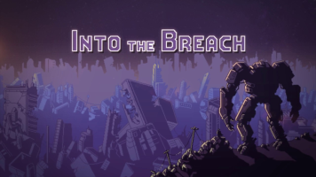

Strategy · 2018
Into the Breach
Perfect-information chess with mechs, and no excuse for a bad turn.

Cover: Wikipedia: Into the Breach
Facts
- Released
- 2018-02-27
- Genre
- Tactics
- Category
- Strategy
- Platforms
- Nintendo, PC
- Developers
- Subset Games
- Publishers
- Subset Games
PC requirements
- Minimum
- [object Object]